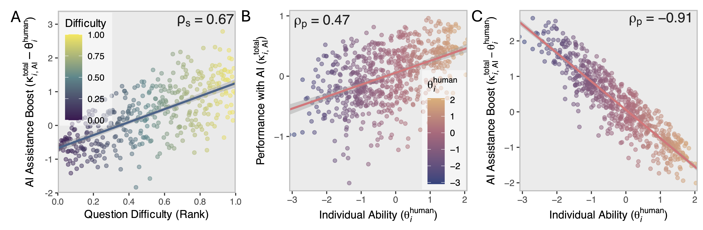

AI Improves Performance in Human-AI Teams
While AI benchmarks have driven remarkable model improvements, they typically evaluate models in isolation—missing how AI actually performs when collaborating with humans in real-world settings. Prior work shows substantial variation in AI's impact depending on task type, difficulty, and user skill, often with conflicting findings.
We introduce a framework for measuring human-AI synergy and use it to answer a simple question: who benefits from using AI and on which tasks? The answer isn't what you might expect. Using data from 667 participants solving reasoning tasks with and without AI assistance, we find significant synergy between humans. Even a relatively weak model (Llama-3.1-8B) combined with humans significantly outperforms humans alone. A stronger model (OpenAI GPT 4o) generates even more synergy, but the gap to the weaker model shrinks. AI acts as a cognitive amplifier on difficult tasks. While high-ability users perform best overall, lower-ability users receive the largest boost—evidence of both skill complementarity and equalizing effects. This suggests the field's current focus on solo benchmark scores may be optimizing for the wrong thing—what matters is how much smarter AI makes the human-AI team, not how smart it is on its own.
Human-AI teams perform substantially better than human-alone, even with the weaker Llama model. GPT-4o provides significantly higher synergy than Llama-3.1-8B (IRT estimates accounting for task difficulty and user ability; bars show 95% CIs).
Who Benefits from AI and on Which Tasks?
AI acts as a cognitive amplifier on difficult tasks. While high-ability users perform best overall, lower-ability users receive the largest boost—evidence of both skill complementarity and equalizing effects.
Theory of Mind Predicts Collaboration Success
What makes people good at using AI? Being good at using AI isn't primarily a technical skill involving secret hacks, keywords, and formulas. Instead, we find it's about "Theory of Mind"—the ability to infer what the AI knows and doesn't know, and to adapt your communication accordingly.
Users better able to infer and adapt to others' perspectives achieve superior collaborative performance with AI. Even moment-to-moment fluctuations in perspective-taking influence AI response quality, highlighting the role of dynamic user factors in human-AI collaboration.
Theory of Mind—the ability to reason about others' mental states—differentially predicts success when collaborating with AI but not when working alone.
Key Findings
Significant Synergy
GPT-4o boosts human performance by 29 percentage points; Llama-3.1-8B by 23 points
Distinct Abilities
Individual problem-solving ability and collaborative ability with AI are separately identifiable latent traits
Theory of Mind Matters
Users with stronger ToM achieve superior collaborative outcomes—but not when working alone
Dynamic Effects
Moment-to-moment fluctuations in perspective-taking influence AI response quality
Citation
@article{riedl2025synergy,
title = {Quantifying Human-AI Synergy},
author = {Riedl, Christoph and Weidmann, Ben},
year = {2025},
journal = {PsyArXiv preprint},
url = {https://osf.io/preprints/psyarxiv/vbkmt_v1}
}
Copied!